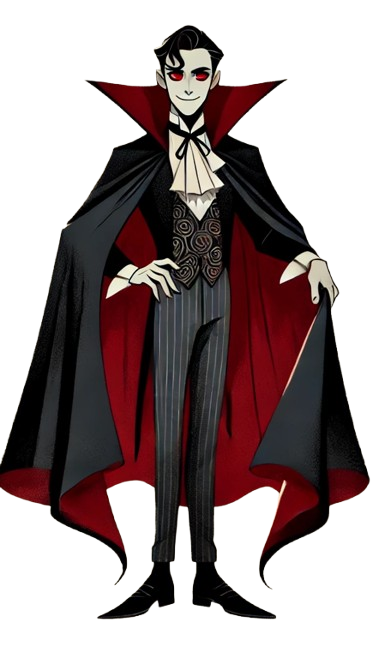

População:
A ilha é habitada por humanos e vampiros.
Os humanos dizem sempre a verdade.
Os vampiros mentem sempre.
Tanto humanos como vampiros podem ser sãos ou doidos.
Os sãos sabem o que estão a dizer.
Os doidos acreditam que as falsidades que dizem são verdadeiras.
